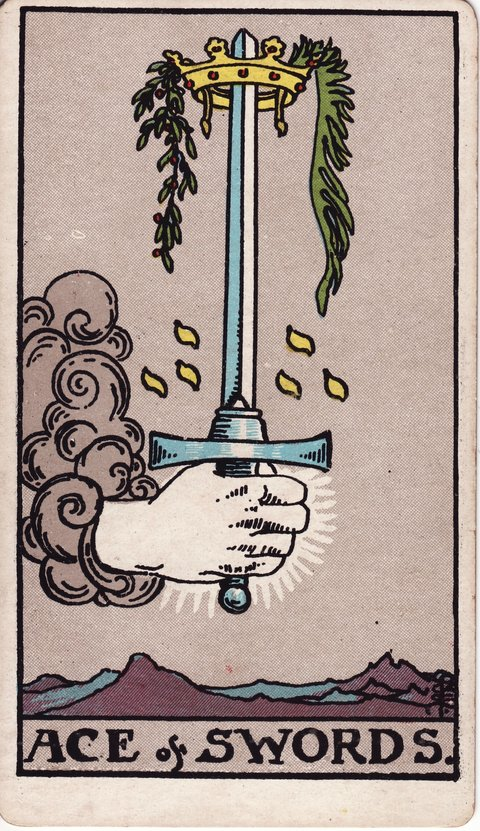

소드 · 타로 카드 백과사전
소드 에이스

정방향
키워드: 명료한 통찰 · 진실 · 선명한 판단 · 번뜩이는 직관 · 말끔해진 생각 · 핵심을 짚는 감각
조언: 흐릿했던 것이 선명해지는 이 순간을 놓치지 말고 결정을 내려보세요.
연애운
솔로
관계에 대한 명확한 마음이 드러나는 시기입니다. 상대의 진심이든 자신의 마음이든, 흐릿했던 부분이 선명해질 수 있어요.
커플
그동안 애매했던 관계의 문제가 명확하게 정리되는 시기입니다. 솔직한 대화로 오해를 풀어보세요.
재물운
소비
재정 상황을 명확하게 파악하며 불필요한 지출을 줄일 수 있는 시기입니다.
투자
투자처에 대한 정보를 명확하게 파악하고 좋은 결정을 내리는 시기입니다. 분석한 만큼 확신을 갖고 움직여도 좋습니다.
취업운
구직
자신에게 맞는 방향이 명확해지는 시기입니다. 그 통찰을 믿고 지원할 곳을 좁혀보세요.
이직
이직에 대한 마음이 명확해지며 중요한 결정을 내리는 시기입니다.
직장운
팀워크
업무에 대한 명확한 통찰로 팀의 중요한 결정을 이끄는 시기입니다.
개인성과
업무에 대한 명확한 통찰로 중요한 결정을 내리는 시기입니다.
사업운
창업준비
사업 아이템과 시장 상황을 명확하게 파악하고 좋은 결정을 내리는 시기입니다.
운영중
그동안 애매했던 사업의 방향이 명확해지는 시기입니다. 통찰을 믿고 결단을 내려보세요.
학업운
시험준비
어려웠던 개념이 명확하게 이해되는 시기입니다. 막혔던 부분이 풀리며 학습에 속도가 붙을 수 있어요.
진로고민
진로에 대한 생각이 명확해지는 시기입니다. 흐릿했던 방향이 선명해지는 것을 느낄 수 있습니다.
건강운
신체
몸 상태의 원인을 명확히 알게 되는 시기입니다. 정확한 진단이 문제 해결의 실마리가 됩니다.
정신
머릿속이 명료해지며 판단력이 좋아지는 시기입니다. 복잡했던 생각이 정리되는 것을 느낄 수 있어요.
대인관계운
새로운 인연
관계에 대한 명확한 마음이나 진실이 드러나는 시기입니다. 솔직한 첫인상이 좋은 시작이 될 수 있어요.
기존 관계
그동안 애매했던 관계의 방향이 명확해지는 시기입니다. 솔직한 대화가 관계를 더 단단하게 만듭니다.
명예운
명확한 사실이 드러나며 평판이 바로잡히는 시기입니다. 진실이 밝혀지는 것이 유리하게 작용할 수 있어요.
이사운
이동에 대한 명확한 결정을 내리는 시기입니다. 흐릿했던 계획이 선명해지며 확신을 갖고 움직일 수 있어요.
자식운
아이 문제의 원인을 명확히 알게 되는 시기입니다. 문제를 정확히 파악하면 해결의 실마리를 찾을 수 있어요.
역방향
키워드: 혼란 · 왜곡된 정보 · 성급한 결론 · 뒤엉킨 정보 · 헛다리 짚기 · 조급한 확신
조언: 성급하게 결론짓기 전에 사실관계부터 차분히 다시 확인해보세요.
연애운
솔로
오해나 왜곡된 정보로 관계에 혼란이 생길 수 있는 시기입니다. 성급하게 판단하지 말고 직접 확인해보세요.
커플
잘못된 소통으로 서로에 대한 오해가 쌓이고 있을 수 있습니다. 감정적으로 대응하기보다 사실을 먼저 짚어보세요.
재물운
소비
잘못된 정보로 지출 판단이 흐려질 수 있는 시기입니다. 충동적인 결정을 조심하세요.
투자
부정확한 정보로 투자 판단을 그르칠 수 있는 시기입니다. 출처를 다시 확인해보세요.
취업운
구직
혼란스러운 정보 속에서 판단이 흐려질 수 있는 시기입니다. 여러 의견에 휘둘리지 말고 스스로 정리해보세요.
이직
잘못된 정보로 이직 결정을 그르칠 수 있으니 다시 한번 꼼꼼히 확인해보세요.
직장운
팀워크
혼란스러운 정보 속에서 팀의 판단이 흐려질 수 있는 시기입니다. 사실관계를 공유하세요.
개인성과
혼란스러운 정보 속에서 판단이 흐려질 수 있는 시기입니다.
사업운
창업준비
잘못된 시장 정보로 사업 판단이 흐려질 수 있는 시기입니다. 재검증이 필요합니다.
운영중
혼란스러운 내부 정보로 의사결정이 흐려질 수 있는 시기입니다. 사실관계부터 명확히 하세요.
학업운
시험준비
잘못된 정보나 오해로 혼란을 겪을 수 있는 시기입니다. 정확한 자료를 다시 확인해보세요.
진로고민
여러 의견에 휘둘려 진로에 대한 확신이 흔들릴 수 있는 시기입니다.
건강운
신체
부정확한 정보로 잘못된 건강 판단을 할 수 있는 시기입니다. 전문가의 확인을 받아보세요.
정신
혼란스러운 생각들로 머리가 복잡해질 수 있는 시기입니다. 잠시 정리할 시간이 필요합니다.
대인관계운
새로운 인연
오해나 왜곡된 정보로 관계에 혼란이 생길 수 있는 시기입니다. 첫인상만으로 판단하지 마세요.
기존 관계
잘못된 소통으로 오해가 쌓이고 있을 수 있는 시기입니다. 직접 확인하는 대화가 필요합니다.
명예운
잘못된 소문으로 평판에 혼란이 생길 수 있는 시기입니다. 사실을 명확히 밝히는 것이 중요합니다.
이사운
잘못된 정보로 이동 판단이 흐려질 수 있는 시기입니다. 조건을 다시 한번 정확히 확인해보세요.
자식운
잘못된 정보로 아이에 대한 판단이 흐려질 수 있는 시기입니다. 성급한 결론보다 정확한 확인이 우선입니다.
같은 슈트: 소드 에이스 · 소드 2 · 소드 3 · 소드 4 · 소드 5 · 소드 6 · 소드 7 · 소드 8 · 소드 9 · 소드 10 · 소드 시종 · 소드 기사 · 소드 퀸 · 소드 킹
홈에서 직접 카드 뽑아보기 ↗